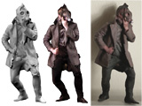
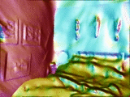
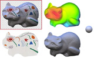
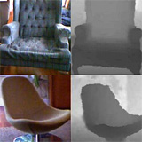

|
Arash Rasti-Meymandi I'm currently a PhD Condidate in Electrical & and Computer Engineering at Multimedial Lab, University of Toronto under the supervision of Professor Konstantinos N. Platanioits. My current research is mainly on distributed machine learning algorithms: Federated Learning with a particular emphasis on graph-structured connectivity, Graph Neural Networks, Graph Transformers . |

|
ResearchI'm interested in distributed machine learning, computer vision, deep learning, diffusion models, and their application in real-world scenarios such as in Biomedical or Communication Technologies. |
|  |
Graph federated learning for ciot devices in smart home applications
Arash Rasti-Meymandi, Seyed Mohammad Sheikholeslami, Anton Gudym, Jamshid Abouei,Konstantinos N Plataniotis IEEE Internet of Things Journal, 2022 Paper/ Code A novel graph-based aggregation based on graph filtering for federated learning. |
|

 |
Intrinsic Scene Properties from a Single RGB-D Image
Jonathan T. Barron, Jitendra Malik CVPR, 2013 (Oral Presentation) supplement / bibtex / talk / keynote (or powerpoint, PDF) / code & data By embedding mixtures of shapes & lights into a soft segmentation of an image, and by leveraging the output of the Kinect, we can extend SIRFS to scenes.
|

|
Boundary Cues for 3D Object Shape Recovery
Kevin Karsch, Zicheng Liao, Jason Rock, Jonathan T. Barron, Derek Hoiem CVPR, 2013 supplement / bibtex Boundary cues (like occlusions and folds) can be used for shape reconstruction, which improves object recognition for humans and computers. |


|
Color Constancy, Intrinsic Images, and Shape Estimation
Jonathan T. Barron, Jitendra Malik ECCV, 2012 supplement / bibtex / poster / video This paper is subsumed by SIRFS. |


|
Shape, Albedo, and Illumination from a Single Image of an Unknown Object
Jonathan T. Barron, Jitendra Malik CVPR, 2012 supplement / bibtex / poster This paper is subsumed by SIRFS. |
|  |
A Category-Level 3-D Object Dataset: Putting the Kinect to Work
Allison Janoch, Sergey Karayev, Yangqing Jia, Jonathan T. Barron, Mario Fritz, Kate Saenko, Trevor Darrell ICCV 3DRR Workshop, 2011 bibtex / "smoothing" code We present a large RGB-D dataset of indoor scenes and investigate ways to improve object detection using depth information. |

|
High-Frequency Shape and Albedo from Shading using Natural Image Statistics
Jonathan T. Barron, Jitendra Malik CVPR, 2011 bibtex This paper is subsumed by SIRFS. |

|
Discovering Efficiency in Coarse-To-Fine Texture Classification
Jonathan T. Barron, Jitendra Malik Technical Report, 2010 bibtex A model and feature representation that allows for sub-linear coarse-to-fine semantic segmentation. |

|
Parallelizing Reinforcement Learning
Jonathan T. Barron, Dave Golland, Nicholas J. Hay Technical Report, 2009 bibtex Markov Decision Problems which lie in a low-dimensional latent space can be decomposed, allowing modified RL algorithms to run orders of magnitude faster in parallel. |

|
Blind Date: Using Proper Motions to Determine the Ages of Historical Images
Jonathan T. Barron, David W. Hogg, Dustin Lang, Sam Roweis The Astronomical Journal, 136, 2008 Using the relative motions of stars we can accurately estimate the date of origin of historical astronomical images. |

|
Cleaning the USNO-B Catalog Through Automatic Detection of Optical Artifacts
Jonathan T. Barron, Christopher Stumm, David W. Hogg, Dustin Lang, Sam Roweis The Astronomical Journal, 135, 2008 We use computer vision techniques to identify and remove diffraction spikes and reflection halos in the USNO-B Catalog. In use at Astrometry.net |
Experience |


|
Feel free to steal this website's source code. Do not scrape the HTML from this page itself, as it includes analytics tags that you do not want on your own website — use the github code instead. Also, consider using Leonid Keselman's Jekyll fork of this page. |